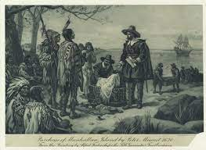
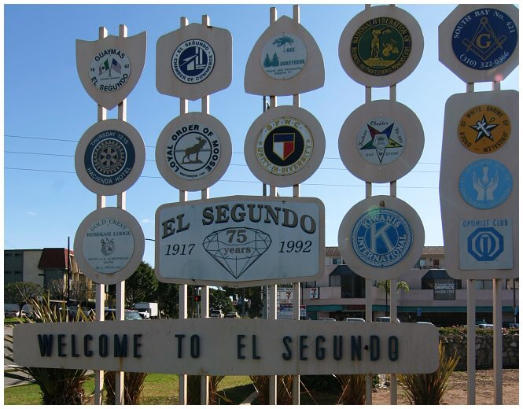
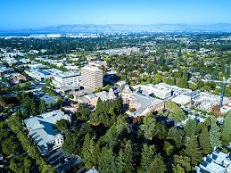

~ paws4you trace network ~
The trace route will take you through the American cities of New York City, Dallas, El Segundo, Naperville, and Mountain View.

New York City, ancestral homeland of the lenape people.
Dallas, the third biggest city in Texas.

El Segundo, is located close to the LAX airport in California.
Naperville, Illinois was founded by John Naper along the DuPage river in 1831.

Mountain View, California is home to over 83,500 residents.